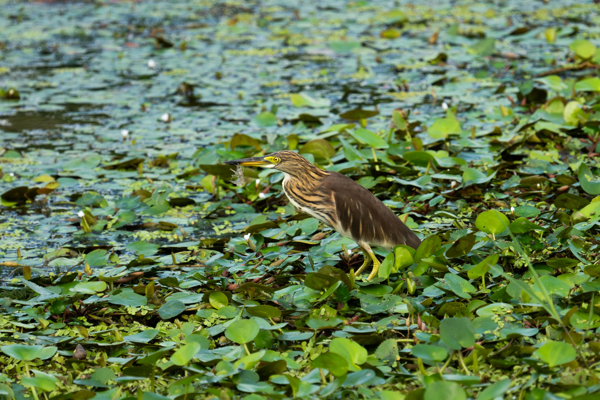
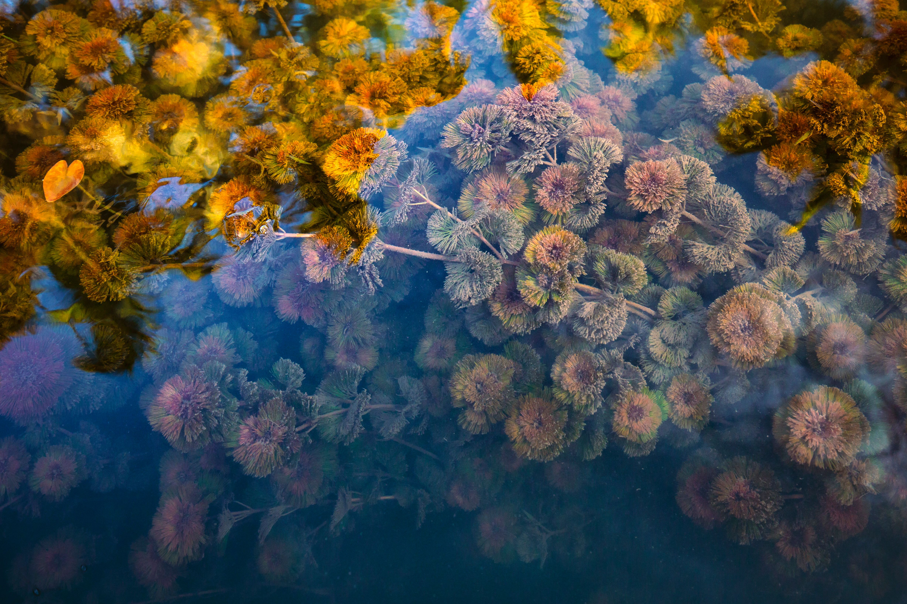
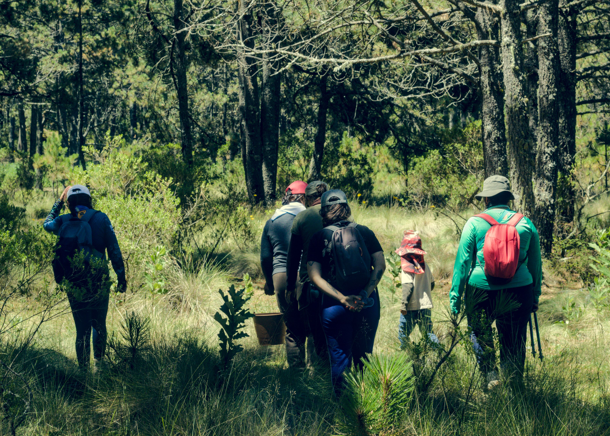

Completed
Wetland Ecology
Project Title – 01
Add a brief description of the completed research project, its objectives and major scientific contributions.
View Project →Explore completed research and conservation initiatives undertaken by TBARC, including their scientific findings, outcomes and contributions to biodiversity knowledge.
A record of completed research, documentation and conservation initiatives.

CompletedAdd a brief description of the completed research project, its objectives and major scientific contributions.
View Project →
CompletedAdd a short summary of the completed project, including its research focus and key outcomes.
View Project →
CompletedAdd information about the completed biodiversity documentation or conservation initiative.
View Project →Every completed project contributes to our understanding of biodiversity, ecosystems and environmental conservation.